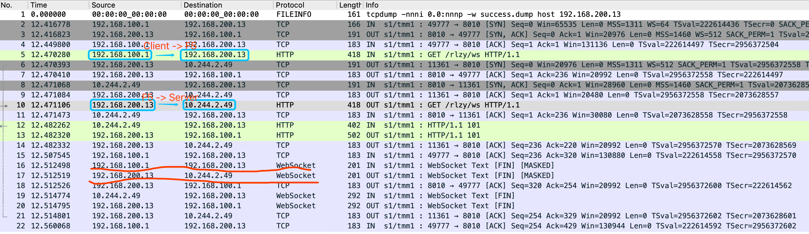
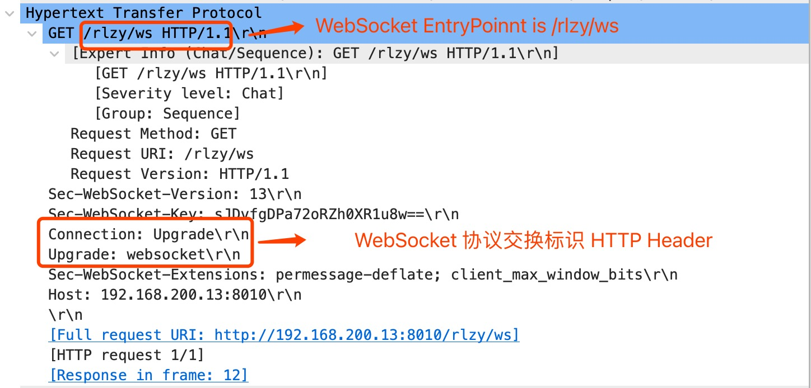

kubectl apply -f deployments.yamlWebSocket Debug
Table of Contents
Deploy WebSocket
The Source code is https://github.com/kylinsoong/springboot-websocket, which contains a Java SpringBoot websocket server, and a node.js websocket Client, the precondition of WebSocket Debug is deploy WebSocket APP.
Assuming K8S,VE,CIS are setting up correctly, then execute:
Deploy WebSocket Server on K8s
|
Note
|
The WebSocket Server is a single way transmission, which can pass large size no-struct message from client to server. |
Expose WebSocket Server via F5 CIS + VE
kubectl apply -f cm.yaml|
Note
|
This step will expose WebSocket Server on VE with IP 192.168.200.13 and port 8010.
|
Test via WebSocket Client
$ node client.js ws://192.168.200.13:8010/rlzy/ws "Hello, World"
Connect to Server via ws://192.168.200.13:8010/rlzy/ws
{"session": "e79e5da7-6bf1-d5e0-088f-802098792cef", "msg": "Hello, World", "date": "Sun Oct 24 02:52:24 UTC 2021"}|
Note
|
This above hints WebSocket Client and Server worked as expect. |
Websocket 协议机制及 F5 支持说明
通信协商机制
由HTTP协议驱动发起协商，协商成功后转为长连接TCP跑websocket数据包，协商成功后HTTP协议不再使用
Ingress Controller 支持Websocket说明
通常Ingress Controller 支持 Websocket 是WebSocket 协商握手的 HTTP Switch 请求经过 Ingress Controller 时添加两个 HTTP 头属性，属性对应的值为：
-
Upgrade→websocket -
Connection→upgrade
F5 支持Websocket说明
当前支持的F5 软件版本，默认 http profile可以识别websocket初始握手的HTTP过程，并在同一个vs中继续支持websocket传输
Client/Server 消息传输 Debug
如上图所示：
-
Client 为 Node.js, 是WebSocket客户端，基于 WebSocket 协议通过 F5 和运行在 K8S 中的WebSocket服务端通信。
-
F5 为 F5 VE，和 F5 CIS一起提供容器入口服务，流量可通过 F5 VE 直达 WebSocket 服务端 POD。
-
Server 为Java SpringBoot，运行在K8S中，提供 WebSocket Entrypoint。
协议交换机报文传输
一次Client/Server 消息传输数据包如下所示：

-
基于 HTTP 的交换握手，和基于WebSocket的报文传输都是 Full Proxy 机制，Client到F5，以及F5到Server属于单独的连接
-
握手先于报文交换
本不是基于默认 http profile，默认支持WebSocket
{
"class": "AS3",
"action": "deploy",
"persist": true,
"declaration": {
"class": "ADC",
"schemaVersion": "3.21.0",
"id": "wsserver",
"wsserver": {
"class": "Tenant",
"wsserver": {
"class": "Application",
"template": "generic",
"app_svc_vs": {
"class": "Service_HTTP",
"persistenceMethods": [ "cookie" ],
"virtualAddresses": [
"192.168.200.13"
],
"snat": "self",
"virtualPort": 8010,
"pool": "wsserver_svc_pool"
},
"wsserver_svc_pool": {
"class": "Pool",
"monitors": [
"tcp"
],
"loadBalancingMode": "least-connections-member",
"members": [
{
"servicePort": 8010,
"serverAddresses": [ ]
}
]
}
}
}
}
}协议交换请求 HTTP 报文

-
F5 http profile 将协议交换所需的 HTTP 头属性已设定完成。
标准通信下 F5 VS 配置
ltm virtual /wsserver/wsserver/app_svc_vs {
description wsserver
destination /wsserver/192.168.200.13:8010
ip-protocol tcp
mask 255.255.255.255
partition wsserver
persist {
cookie {
default yes
}
}
pool /wsserver/wsserver/wsserver_svc_pool
profiles {
f5-tcp-progressive { }
http { }
}
source 0.0.0.0/0
source-address-translation {
pool /wsserver/wsserver/app_svc_vs-self
type snat
}
translate-address enabled
translate-port enabled
vs-index 422
}|
Note
|
http profile 可以识别 websocket 初始握手的 HTTP 过程，并可在同一个 vs 中继续支持 websocket 传输。 |
WebSocket with Custom HTTP Header
WebSocket with XFF Enable
{
"class": "AS3",
"action": "deploy",
"persist": true,
"declaration": {
"class": "ADC",
"schemaVersion": "3.21.0",
"id": "wsserver",
"wsserver": {
"class": "Tenant",
"wsserver": {
"class": "Application",
"template": "generic",
"app_svc_vs": {
"class": "Service_HTTP",
"persistenceMethods": [ "cookie" ],
"virtualAddresses": [
"192.168.200.13"
],
"profileHTTP": {
"use": "customHTTPProfile"
},
"snat": "self",
"virtualPort": 8010,
"pool": "wsserver_svc_pool"
},
"customHTTPProfile": {
"class": "HTTP_Profile",
"xForwardedFor": true
},
"wsserver_svc_pool": {
"class": "Pool",
"monitors": [
"tcp"
],
"loadBalancingMode": "least-connections-member",
"members": [
{
"servicePort": 8010,
"serverAddresses": [ ]
}
]
}
}
}
}
}